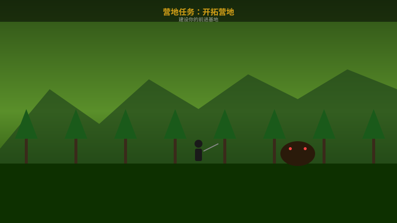
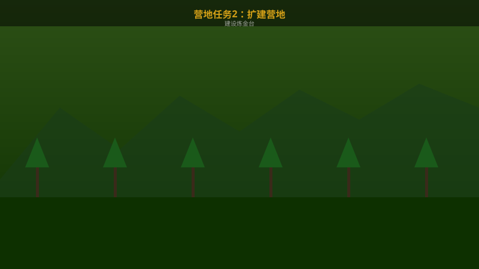
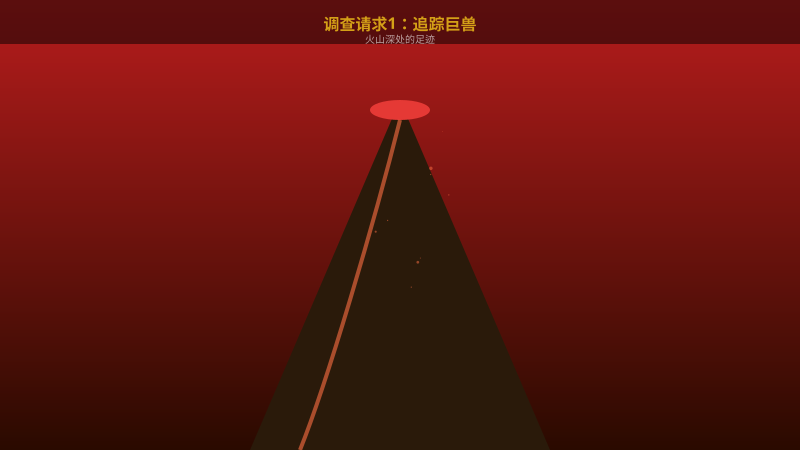
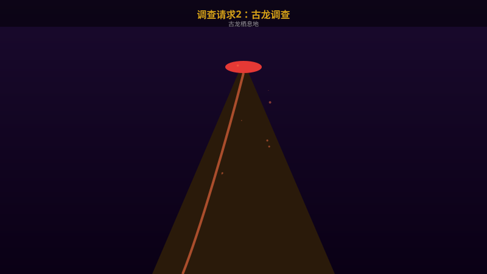

★
营地任务1：开拓营地
营地
📋 流程步骤
- 收集木材
在营地周围收集足够的木材资源。
- 搭建帐篷
使用木材和布料搭建简易帐篷。
- 设置补给箱
放置补给箱，存入基础道具。
- 完成建设
与营地管理员确认建设完成。
丰富支线任务详解，获取稀有素材和装备
通过营地建设获取大量素材和金钱

在营地周围收集足够的木材资源。
使用木材和布料搭建简易帐篷。
放置补给箱，存入基础道具。
与营地管理员确认建设完成。

在森林深处寻找高级木材。
使用金属和玻璃制作炼金台。
扩建后的营地解锁更多功能。
探索未知区域，发现隐藏的秘密
在地图上找到标记的调查区域。
采集指定数量的植物样本。
使用调查笔记记录新发现的植物。
做好防暑准备后进入沙漠区域。
根据线索找到古代遗迹入口。
在遗迹中寻找宝藏和素材。
遗迹中有沙盗龙守护宝藏。
高难度调查任务，获取稀有素材

在调查点分析巨兽留下的痕迹。
跟随痕迹找到巨兽的活动路线。
找到并跟踪目标巨兽。
使用相机拍摄巨兽的特写照片。

需要最高等级的装备和炼金效果。
悄悄接近古龙的栖息地。
在不惊动古龙的情况下收集数据。
收集足够数据后迅速撤离。